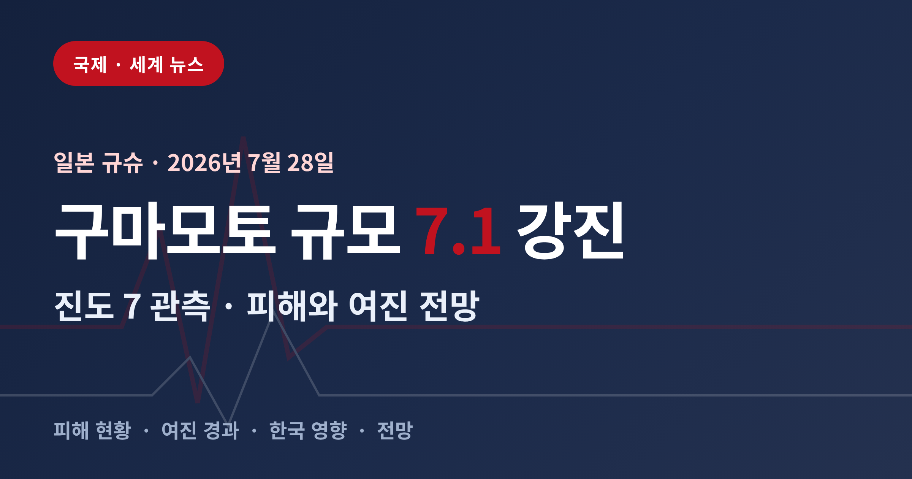
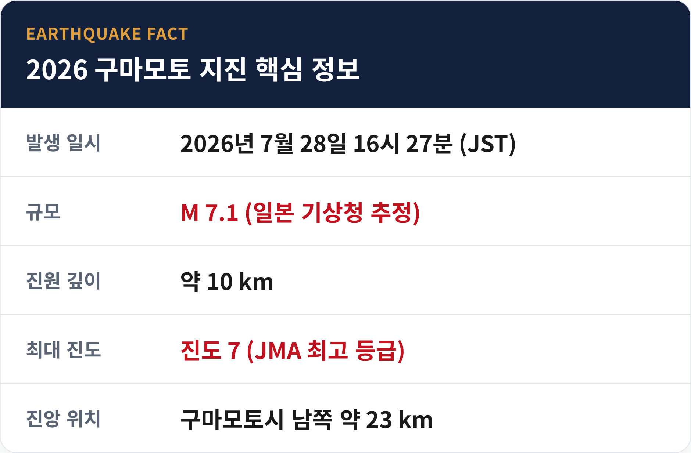
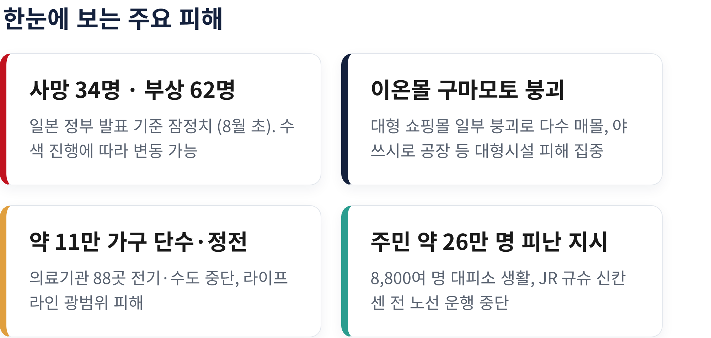
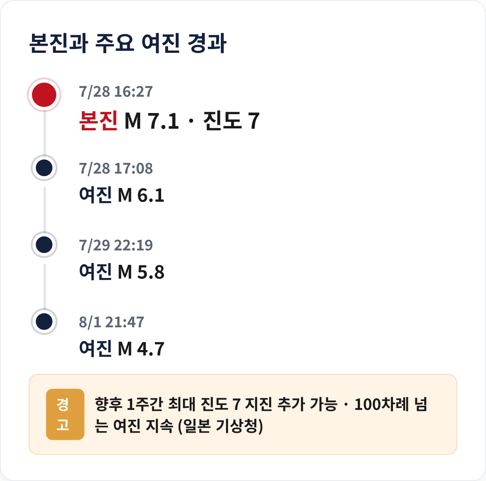
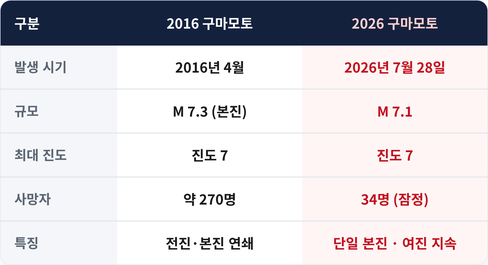
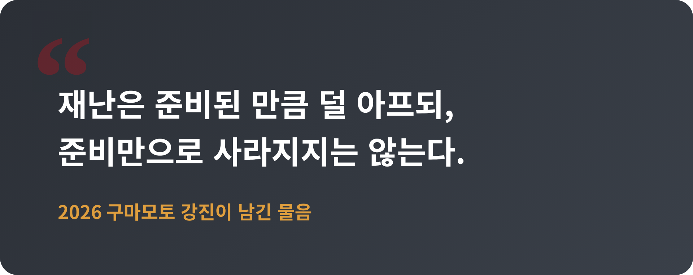

구마모토 규모 7.1 강진, 진도 7 강타 — 피해 현황과 여진 전망 정리

2026년 7월 28일, 일본 규슈 구마모토에서 규모 7.1의 지진이 발생했습니다.
일본 기상청 진도 계급의 최고 등급인 진도 7이 관측됐습니다. 이번 글에서는 지진의 규모와 피해 현황, 이어지는 여진, 그리고 한국에 미치는 영향과 앞으로의 전망을 차분히 정리해 보겠습니다.
■ 무슨 일이 있었나
지진은 7월 28일 오후 4시 27분, 구마모토현 남부에서 일어났습니다.
일본 기상청은 규모를 7.1로 추정했습니다. 진원의 깊이는 약 10km로 비교적 얕았습니다. 진앙은 구마모토시에서 남쪽으로 약 23km 떨어진 지점입니다.
같은 지진을 두고 미국 지질조사국은 규모를 6.8로 산정했습니다. 기관마다 계산 방식이 다르기 때문에 숫자에 차이가 생깁니다. 다만 어느 쪽이든 대형 지진이라는 사실은 달라지지 않습니다.
주목할 대목은 진도입니다. 이번에 구마모토에서 관측된 진도 7은 일본 기상청 계급에서 가장 높은 등급입니다. 고정하지 않은 가구 대부분이 넘어지고, 내진 설계가 약한 건물은 무너질 수 있는 흔들림입니다.
일본 기상청은 이 지진을 '2026년 구마모토 지진'으로 명명했습니다.

■ 왜 이 지진이 특별한가
이번 지진은 두 가지 기록과 맞닿아 있습니다.
하나는 시점입니다. 일본에서 진도 7이 관측된 것은 2024년 1월 노토반도 지진 이후 처음입니다. 약 2년 7개월 만에 최고 진도가 다시 나타난 셈입니다.
다른 하나는 장소입니다. 구마모토는 이미 10년 전 큰 상처를 겪은 곳입니다. 2016년 4월, 이 지역은 규모 6.5의 전진과 규모 7.3의 본진이 연이어 덮치며 약 270명이 목숨을 잃었습니다. 아물어 가던 자리에 다시 강진이 찾아온 것입니다.
같은 땅이 10년 사이 두 번 흔들렸습니다. 주민들이 받은 충격은 숫자로만 헤아리기 어렵습니다.
■ 인명·건물 피해 현황
피해 규모는 시간이 지나며 계속 커졌습니다.
처음 보도에서는 사망자가 최소 13명이었습니다. 7월 30일에는 17명으로 확정됐습니다. 이후 일본 정부 발표에서는 사망자가 34명까지 늘었습니다. 부상자는 최소 62명, 이 가운데 6명이 중상으로 전해졌습니다.
다만 이 수치는 잠정입니다. 수색과 구조가 이어지는 중이라 앞으로 더 달라질 수 있습니다. 재난 초기의 숫자는 늘 조심스럽게 봐야 합니다.
피해가 집중된 곳은 대형 건물이었습니다. 대형 쇼핑몰인 이온몰 구마모토에서는 건물 일부가 붕괴하며 쇼핑객 여러 명이 갇혔습니다. 폭발로 추정되는 사고도 함께 보고됐습니다. 일본제지 야쓰시로 공장에서는 8명이 숨진 것으로 전해졌습니다.
구마모토시 일부 지역에서는 화재가 났습니다. 도로와 교량이 손상되고, 오래된 건물이 곳곳에서 무너졌습니다.
사망자 가운데 상당수가 이 두 시설에서 나왔습니다. 사람이 몰리는 대형 건물이 무너질 때 피해가 어떻게 커지는지를 다시 보여준 사례입니다. 진앙과 가까운 지역일수록 붕괴가 집중됐고, 구조대는 무너진 잔해 속에서 매몰자를 찾는 작업을 밤새 이어갔습니다.

■ 쓰나미와 원전, 인프라는 어땠나
지진 직후 아리아케해와 야쓰시로해에 쓰나미 주의보가 내려졌습니다.
예상 파고는 20cm에서 1m 사이였습니다. 다행히 큰 해일로 이어지지는 않았고, 주의보는 약 100분 뒤인 오후 6시 10분경 해제됐습니다.
가장 걱정되는 원전은 이상이 없었습니다. 규슈전력은 인근의 센다이 원전과 겐카이 원전이 정상 가동 중이며 문제가 없다고 밝혔습니다.
라이프라인 피해는 컸습니다. 약 11만 가구가 단수 또는 정전을 겪었습니다. 의료기관 88곳도 전기와 수도가 끊겼습니다. 주민 약 26만 명에게 피난 지시가 내려졌고, JR 규슈는 신칸센을 포함한 모든 철도 노선의 운행을 멈췄습니다.
전기와 물, 교통이 한꺼번에 끊기자 일상은 순식간에 멈춰 섰습니다.
■ 여진은 계속되고 있다
본진이 끝이 아니었습니다.
지진 이후 100차례가 넘는 여진이 이어졌습니다. 7월 28일 오후 5시 8분에는 규모 6.1의 여진이 있었습니다. 7월 29일 밤 10시 19분에는 규모 5.8, 8월 1일 밤에는 규모 4.7의 여진이 관측됐습니다.
일본 기상청은 향후 일주일간 최대 진도 7 수준의 지진이 다시 발생할 수 있다고 경고했습니다. 그만큼 지반이 아직 안정되지 않았다는 뜻입니다.
여기에 여름 폭염이 겹쳤습니다. 무너진 집을 떠나 대피소에 머무는 주민들은 더위와 여진이라는 이중의 위협을 견디고 있습니다. 냉방과 식수가 부족한 대피소에서는 온열질환 위험도 함께 커집니다. 지진의 직접 피해가 지나간 뒤에도, 재난이 남긴 위험은 이렇게 한동안 이어집니다.

■ 한국에 미치는 영향
거리가 가까운 만큼 한반도도 흔들림을 느꼈습니다.
이번 지진으로 국내에서는 장주기지진동 계급 1이 관측됐습니다. 전남과 광주에서 진도 2가 감지됐고, 부산에서도 흔들림이 느껴졌습니다. 7월 29일 규모 5.8 여진 때는 경남과 전남 일부에서 다시 진동이 감지됐습니다.
다만 실제 지진해일 피해나 공급망 혼란은 확인되지 않았습니다. 쓰나미 주의보도 주의보 단계에서 해제됐습니다. 현재로서는 직접적인 물리적 피해보다, 경계와 대비가 필요하다는 신호로 받아들이는 편이 맞습니다.
한국도 더 이상 지진 안전지대가 아니라는 점은 여러 차례 확인돼 왔습니다. 이웃 나라의 재난은 우리에게도 점검의 계기가 됩니다. 가구 고정, 비상용품 준비, 대피 경로 확인 같은 기본은 지진이 나기 전에 해 두어야 의미가 있습니다.

■ 일본의 지진 대비와 남은 과제
일본은 세계에서 지진 대비가 가장 앞선 나라로 꼽힙니다.
긴급지진속보 체계가 갖춰져 있고, 건물의 내진 설계가 법으로 의무화돼 있습니다. 활성단층을 감시하는 관측망도 촘촘합니다.
그럼에도 이번에 피해는 대형 건물과 노후 시설에 집중됐습니다. 준비가 잘 된 나라에서도 진도 7 앞에서는 완벽한 방어가 어렵다는 사실이 드러난 셈입니다.
특히 2016년에 한 차례 큰 지진을 겪은 지역이라는 점이 무겁게 다가옵니다. 그때 보수하거나 새로 지은 건물도 있었지만, 미처 손대지 못한 노후 시설이 이번에 다시 무너졌습니다. 재건과 대비가 어디까지 진행됐느냐가 피해의 크기를 갈랐다고 볼 수 있습니다.
예전에는 '대비가 곧 안전'이라고 믿었습니다. 지금은 대비가 피해를 줄일 뿐, 없애지는 못한다는 쪽에 무게가 실립니다. 겸손해질 수밖에 없는 대목입니다.
정리하면 이렇습니다.
2026년 7월 28일 구마모토 강진은 진도 7이라는 최고 등급의 흔들림으로 큰 인명·재산 피해를 남겼습니다. 여진은 아직 진행 중이고, 폭염 속 대피 생활도 이어지고 있습니다. 한국에 직접 피해는 없었지만, 경계의 끈을 놓기는 이릅니다.

"재난은 준비된 만큼 덜 아프되, 준비만으로 사라지지는 않는다."
멀리 이웃의 흔들림 앞에서, 우리는 무엇을 점검하고 있는지 다시 묻게 됩니다.